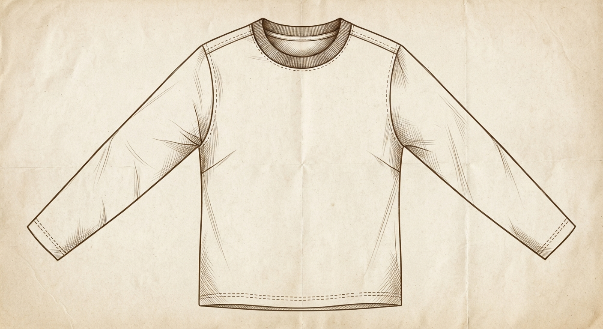
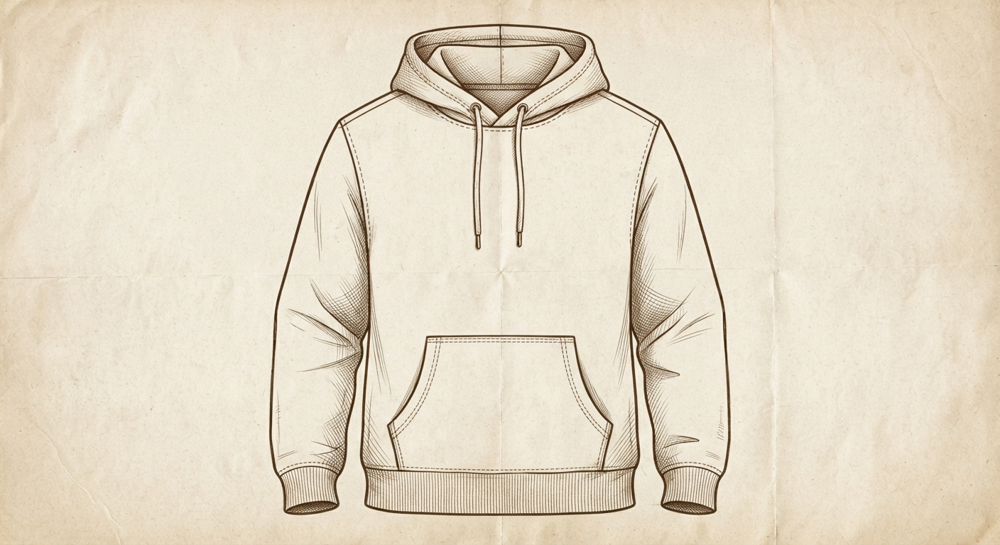
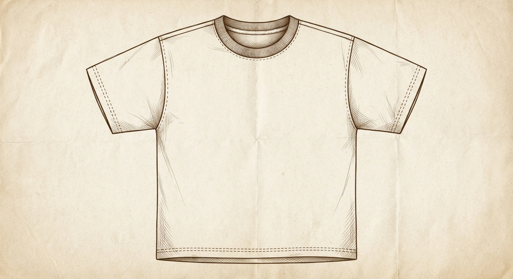
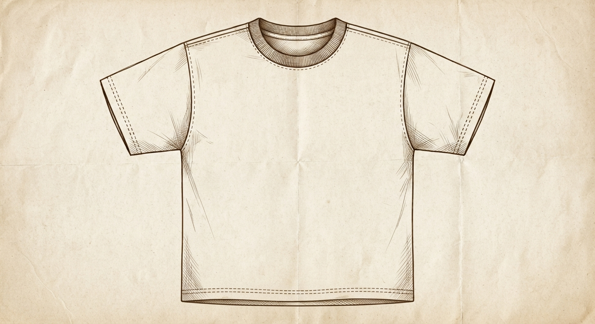
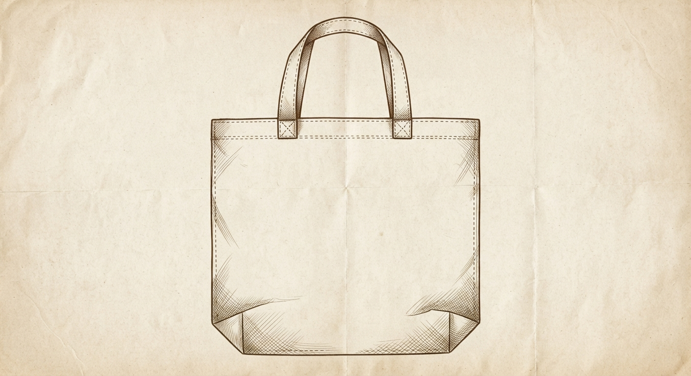

Case files
-

Long Sleeve
LOT 03 · BATCH 0041Wilfred — shirts. Forty years, and he's never once used a machine to tie a buttonhole.
Failed inspectionButtonhole tolerance exceeds Directive 94/EC-7, Annex C. Hand-tied closures cannot be logged as consistent.
A man's whole life's work doesn't stop being correct just because a form disagrees with it.
Watch the case → -

Hoodie
LOT 07 · BATCH 0044Bertram — wool fuller. Forty years, and he's never once used a machine to do it.
Failed inspectionFabric-safety form has no field for untreated wool. A chemical that was never used cannot be certified absent.
A fabric doesn't need a chemical to prove it's safe. It needed one four hundred years before the form did.
Watch the case → -

Heavyweight Tee
LOT 12 · BATCH 0040Corwin — loom-minder. Thirty-one years on the same shuttle loom, the one the mill never replaced.
Failed inspectionFabric weight was logged by hand before the mill's line shut down. No digital lot record, so origin can't be certified.
The loom didn't stop being right the day the mill stopped being open.
Case pending -

Ribbed Neck Tee
LOT 09 · BATCH 0038Osric — pattern cutter. Cuts every piece by hand, to how the body actually sits, not how the chart says it should.
Failed inspectionGarment dimensions deviate from the printed size chart by a hand-cutter's tolerance. Non-conforming, regardless of fit.
The chart describes an average body. Osric was cutting for yours.
Case pending -

Tote
LOT 05 · BATCH 0037Hollis — canvas waxer. Twenty-six years hand-rubbing the same beeswax blend into raw canvas.
Failed inspectionWaterproofing agent isn't listed in the approved solvent registry. Beeswax and tallow are not on file.
The registry has a box for chemicals. It has never had one for bees.
Case pending